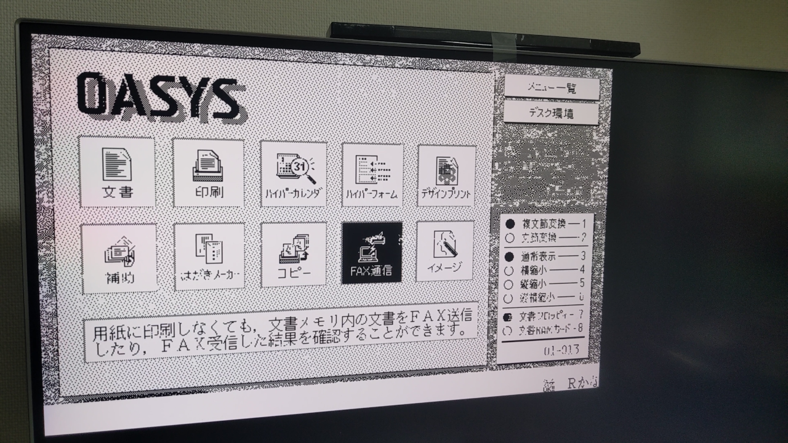

主な活動名:pepepper, 白坂 千春
生年月日:2001年6月17日
経歴
主な資格
Windows CEが動作しているあるデバイスに対してLinuxを移植したプロジェクト
特に組み込み機器向けブートローダーであるU-Bootを起動するためのツールであるBrainLILOやnkbin_makerといたツールに多く貢献した
これらの開発を通してハードウェアの制御や割り込み、メモリといった低レイヤの領域に深く触れるきっかけとなった
また、経験を活かしてあるAndroidタブレット(2022年)や他のWindows CEデバイス(2024年〜)に対してもLinuxの移植を行っている
関連項目:電子辞書は任意バイナリの夢を見るか? ver1.1
ビネガーシンドロームが発生し液晶が使用不能になったあるワードプロセッサーの映像信号線をロジックアナライザを使用し解析し、 FPGAを使用してHDMIに変換するものを作成した
また後継機種に搭載されているATAPIドライブのエミュレータを設計中(2024年〜)
蛍光表示管を使用した時計 回路設計や基板設計を自身で行い制御プログラムも開発した
WiFi付きマイコンを使用して新たに設計を行っている(2024年〜)